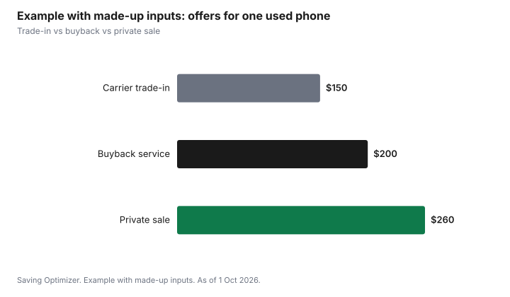

Technology · Canada
Selling an Old Phone Safely in Canada: Wipe, Unlink and Get Paid
To sell an old phone safely in Canada, back it up, sign out of your Apple or Google account so the next owner is not blocked by activation lock, then factory reset it and remove the SIM, eSIM and memory card. Make sure any device balance with your carrier is paid. For a private sale, meet in a public place and confirm payment has actually arrived before handing it over; fake e-Transfer emails and overpayment requests are common scams.
Key takeaways
- Back up photos, messages and authenticator apps.
- Sign out of your Apple ID or Google account (removes activation lock and factory reset protection).
- Unpair watches and earbuds, then factory reset.
- Remove the SIM and memory card; delete the eSIM.
- Confirm payment in your bank account, not an email, before handing over the phone.
Prepare the phone
- Back up your data and move authenticator and banking apps to your new phone.
- Turn off Find My (iPhone) or remove the Google account (Android).
- Unpair wearables and remove the phone from your account's trusted devices.
- Erase all content and settings (factory reset).
- Remove the SIM and microSD card; delete any eSIM.
- Check with your carrier that the device balance is $0.
Where to sell
| Option | Pros | Cons |
|---|---|---|
| Carrier trade-in | Easy; credit to your bill or new phone | Often lower value; credits may be tied to a plan |
| Manufacturer trade-in | Simple, credit toward a new device | Value depends on condition |
| Buyback or refurbisher | Quick quote and shipping | Condition grading can lower the offer |
| Private sale | Often the highest price | Your time and scam risk |
Avoid payment scams
- Fake e-Transfer notifications: check your bank app, not an email link.
- Overpayment: a buyer sends too much and asks for a refund. Do not refund; the original payment may be fake.
- Shipping before payment: only ship after payment has cleared, or sell locally.
- Never share verification codes sent to your phone.
iPhone vs Android: the key steps
| Step | iPhone | Android |
|---|---|---|
| Back up | iCloud backup or a computer backup | Google backup, or the maker's backup tool |
| Remove the lock | Sign out of your Apple Account, which turns off Find My and Activation Lock | Remove your Google account (and the maker's account, if any) to clear factory reset protection |
| Wearables | Unpair an Apple Watch first | Unpair watches and earbuds in their app |
| Erase | Settings, General, Transfer or Reset, Erase All Content and Settings | Settings, System or General management, Reset, Factory data reset |
| eSIM | Choose to delete the eSIM when erasing, after moving it to your new phone | Delete the eSIM in SIM settings after moving it |
Moving your accounts first
Before erasing, make sure you can sign in without the old phone. Move authenticator apps to the new phone, since codes stored only in an authenticator do not always transfer with a backup. Check that your bank, email and messaging apps work on the new phone. Note that messaging apps tied to your phone number may need you to confirm the number on the new device.
Selling privately, step by step
- Clean the phone and take clear photos showing the screen on, the back, the edges and any damage.
- List the model, storage, battery health, unlocked status, and what is included.
- Answer questions through the platform's messaging, and do not share your phone number or email early.
- Meet in a busy public place; many police services offer safe exchange zones.
- Let the buyer inspect the phone while you watch.
- Confirm payment has arrived in your bank account, or take cash, before handing over the phone.
Recycling a phone with no resale value
If the phone is too old or damaged to sell, recycle it rather than throwing it out. Recycle My Cell, run by the Canadian wireless industry, lists drop-off locations across Canada, and provincial electronics recycling programs, such as those listed by Recycle My Electronics, accept phones in many provinces. Erase the phone first, even for recycling.
Pricing your phone
Look at what the same model and storage size has recently sold for, not just asking prices, and compare trade-in and buyback quotes. Condition drives the price: a cracked screen or weak battery lowers offers sharply. Unlocked status, the original box and a charger can help. If you get an offer far above others, be cautious; inflated offers are a common lead-in to payment scams.
Common mistakes
- Erasing the phone without signing out first, leaving the buyer with a locked device and you with a dispute.
- Forgetting a memory card or physical SIM in the tray.
- Handing over the phone after a payment email instead of checking the bank account.
- Shipping to a buyer before payment clears.
- Selling while a device balance is still owing and forgetting it will be billed.
Example with made-up inputs: comparing offers
These numbers are an example with made-up inputs, not current values.
| Option | Offer |
|---|---|
| Carrier trade-in | $150 |
| Buyback service | $200 |
| Private sale | $260 |

Sources
- Apple and Google support, erasing a device and removing activation lock or factory reset protection, as of 1 Oct 2026.
- Recycle My Cell (Canadian wireless industry program) and Recycle My Electronics (provincial electronics recycling programs), as of 1 Oct 2026.
- The values in the example table and chart are made-up inputs.
Frequently asked questions
How do I wipe my phone before selling?
Back it up, sign out of your Apple ID or Google account, unpair wearables, then erase all content and settings. Remove the SIM and memory card and delete any eSIM.
What is activation lock?
A security feature tied to your account. If you do not sign out, the buyer cannot use the phone.
Can I sell a phone I still owe money on?
You can, but the remaining device balance with your carrier is still yours to pay. Pay it off or factor it in.
How do I avoid fake e-Transfer scams?
Check the deposit in your bank app before handing over the phone. Do not trust emails or texts claiming payment.
Is a trade-in or private sale better?
A private sale often pays more; a trade-in is simpler. Compare offers.
What should I do with a phone that is too old to sell?
Erase it, then recycle it. Recycle My Cell lists drop-off locations across Canada, and provincial electronics recycling programs accept phones in many provinces.
Will my authenticator codes move to my new phone?
Not always. Move authenticator apps to the new phone and confirm you can sign in to key accounts before erasing the old one.
How do I price a used phone?
Compare recent sold prices for the same model and storage, plus trade-in and buyback quotes. Condition, battery health and unlocked status all affect the price.
Should I remove my phone from my carrier account?
Yes, once your number has moved to your new phone, check that the old device is no longer listed on your account and that no device balance is owing.
Is a trade-in safer than selling privately?
A trade-in avoids meeting strangers and payment scams, but usually pays less. A private sale pays more and needs more care.
Researched and drafted with AI assistance and fact-checked against official Canadian sources. How we create content.
Disclosure: Trade-in and buyback services are described as offer types; none is named or ranked. Saving Optimizer may earn a commission if a partner link is added later; no partnership is claimed. Education only.